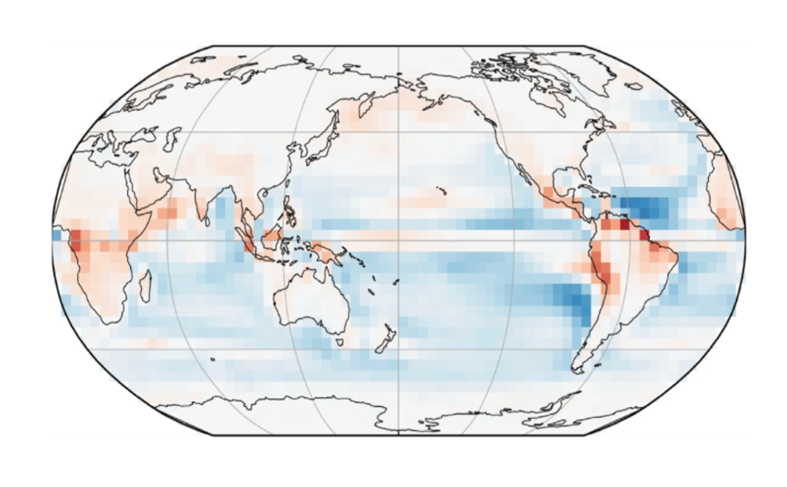

Detection and Attribution of Climate Change Signals

The challenge: Detection and attribution (D&A) of global climate change and its drivers is well established: human influence — especially through greenhouse gas emissions — has been clearly linked to observed global warming. At large scales, we can distinguish between forced responses and internal variability, and identify the roles of different natural and anthropogenic drivers. However, major challenges remain at r>egional scales and for specific aspects of the climate system, such as the hydrological cycle or changes in atmospheric circulation. In these aspects, uncertainties persist — particularly when disentangling internal and forced variability or the effect of individual forcings. For example, recent trends in atmospheric circulation have led to intensified summer temperatures and heat extremes in Europe, exceeding many climate model projections. Yet it remains unclear whether these trends result from forced climate change or unforced internal variability.
What we do: Our group develops and applies a range of methods — including statistical, machine learning, and causal inference techniques — to advance detection and attribution on both regional and global scales. We use models and observations to: - Improve understanding of changes in the hydrological cycle and large-scale circulation, - Separate thermodynamic changes from circulation-driven (dynamical) variability, - Refine attribution by focusing on distinct physical mechanisms, - Identify processes that contribute to uncertainty in future climate projections.
This integrated approach helps us to better detect the fingerprints of climate change, understand its driving mechanisms, and improve the robustness of climate projections.
Publications:
Kretschmer, M., Zappa, G. and Shepherd, T.G., 2020. The role of Barents–Kara sea ice loss in projected polar vortex changes. Weather and Climate Dynamics, 1(2), pp.715-730. https://doi.org/10.5194/wcd-1-715-2020
Mindlin, J., Shepherd, T.G., Vera, C.S., Osman, M., Zappa, G., Lee, R.W. and Hodges, K.I., 2020. Storyline description of Southern Hemisphere midlatitude circulation and precipitation response to greenhouse gas forcing. Climate Dynamics, 54, pp.4399-4421. https://doi.org/10.1007/s00382-020-05234-1
Pfleiderer, P., Merrifield, A., Dunkl, I., Durand, H., Cariou, E., Cattiaux, J. and Sippel, S., 2025. The contribution of circulation changes to summer temperature trends in the northern hemisphere mid-latitudes: A multi-method quantification. EGUsphere, 2025, pp.1-28. https://doi.org/10.5194/egusphere-2025-2397
Sippel, S., Meinshausen, N., Fischer, E.M., Székely, E. and Knutti, R., 2020. Climate change now detectable from any single day of weather at global scale. Nature climate change, 10(1), pp.35-41. https://doi.org/10.1038/s41558-019-0666-7